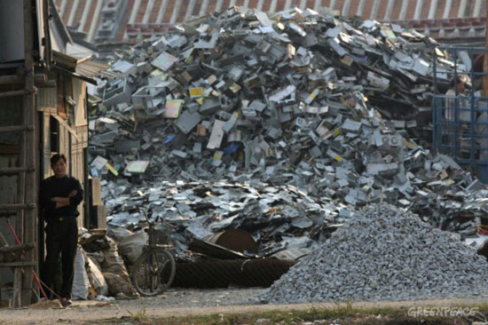

<div id="jsn-maincontent" class="span9 order1 row-fluid">
  <div id="jsn-maincontent_inner">
    <div id="jsn-centercol">
      <div id="jsn-centercol_inner">
        <div id="jsn-mainbody-content" class="jsn-hasmainbody">
          <div id="jsn-mainbody-content-inner1">
            <div id="jsn-mainbody-content-inner2">
              <div id="jsn-mainbody-content-inner3">
                <div id="jsn-mainbody-content-inner4" class="row-fluid">
                  <div id="jsn-mainbody-content-inner" class="span12 order1">
                    <div id="jsn-mainbody">
                      <div id="system-message-container"></div>

                      <div
                        class="item-page"
                        itemscope
                        itemtype="https://schema.org/Article"
                      >
                        <meta itemprop="inLanguage" content="en-GB" />

                        <div itemprop="articleBody">
                          <p></p>
                          <h1 style="text-align: center">
                            The environmental effects of computers
                          </h1>
                          <p>
                            <strong
                              class="NormalContentHeading"
                              style="line-height: 1.5"
                              >Environmental issues<br /></strong
                            >Computers require energy to build. The components
                            that make up computers use energy in their
                            manufacture. The majority of energy sources
                            contribute in various degrees to polluting the
                            atmosphere and the environment. It has been
                            estimated that to build just one computer requires
                            approximately ten times its weight in chemicals and
                            energy!&nbsp;
                          </p>

                          <p class="NormalContent">
                            To make one computer, according to scientists at
                            the UN University in Tokyo, you need:
                          </p>
                          <ul>
                            <li style="list-style-type: none">
                              <ul style="list-style-type: disc">
                                <li>About 250 Kg of fossil fuel.</li>
                                <li>Over 20 Kg of chemicals.</li>
                                <li>
                                  Over 1000 different chemicals, including lead,
                                  arsenic, cadmium (all toxic).
                                </li>
                                <li>Over 1500 Kg of water.</li>
                              </ul>
                            </li>
                          </ul>
                          <p>
                            Around the world, we continue to make computers in
                            huge quantities. Approximately 150 million will be
                            made in the next 12 months alone. If you then
                            multiply that number by the amount of energy,
                            chemicals and water required, it is not difficult to
                            see how computers contribute to pollution. If you
                            also consider that a typical PC would be lucky to be
                            in use for just three years (compared to 10 - 15
                            years for a car and about 15 for a fridge), you can
                            get an idea of the numbers of PCs involved.
                          </p>
                          <p>
                            European legislation has been introduced that
                            demands 70% of a PC is recycled when it is finally
                            scrapped. Whilst governments have encouraged
                            recycling, some people have argued that this is the
                            <em>wrong</em> approach. It takes a lot of energy,
                            they argue, to recycle computers! It can also in
                            itself be the cause of environmental damage. For
                            example, PCs are being transported to developing
                            countries such as China for recycling. The process
                            to recover metals such as copper, lead and gold from
                            computer hardware involves the use of acid baths –
                            and this is not good for the environment. It is also
                            not good for the people directly involved in the
                            recovery process. This is because health and safety
                            standards are well below those of the developed
                            countries and the appropriate protective equipment
                            is rarely provided.
                          </p>
                          <p>
                            A better plan of attack would be to reduce the
                            number of computers being built in the first place.
                            This could be done, for example, by:
                          </p>
                          <ul>
                            <li style="list-style-type: none">
                              <ul style="list-style-type: disc">
                                <li>
                                  Encouraging people to buy second-hand PCs with
                                  warranties - not many people know about the
                                  existence of companies who buy and refurbish
                                  computers.
                                </li>
                                <li>
                                  Giving tax breaks to companies who buy
                                  second-hand PCs, rather than giving companies
                                  tax breaks to buy new PCs.
                                </li>
                                <li>
                                  Refurbishing PCs and sending them to
                                  developing countries for use there.
                                </li>
                                <li>
                                  Encouraging people to upgrade existing PCs
                                  with new innovations, rather than upgrading
                                  their entire PC.
                                </li>
                                <li>
                                  Encouraging PC manufacturers to invest in
                                  making products last longer.
                                </li>
                                <li>
                                  Encouraging a paperless society. A lot of hard
                                  copy is still produced. The more paper used,
                                  the more trees have to be cut down. Even if
                                  these are from renewable sources, turning
                                  trees into paper involves energy as well as
                                  involves making parts of forests an eyesore.
                                </li>
                              </ul>
                            </li>
                          </ul>
                          <p></p>
                        </div>
                      </div>
                    </div>
                  </div>
                </div>
              </div>
            </div>
          </div>
        </div>
      </div>
    </div>
  </div>
</div>
